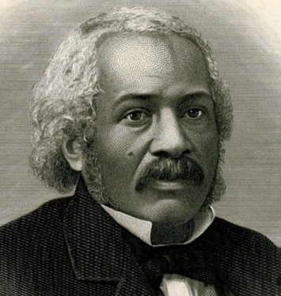

James McCune Smith

James McCune Smith foi um médico, abolicionista e autor afro-americano, reconhecido como o primeiro afro-americano a obter um diploma em medicina. Impedido de ingressar em universidades nos Estados Unidos devido à discriminação racial, Smith matriculou-se na Universidade de Glasgow, na Escócia, onde concluiu com distinção sua formação médica.
Principais Contribuições
- Primeiro afro-americano a obter um diploma em medicina, graduando-se na Universidade de Glasgow em 1837.
- Fundou uma clínica médica na cidade de Nova York, onde oferecia atendimento a comunidades marginalizadas.
- Ativista fervoroso da abolição da escravidão, contribuindo para jornais antiescravagistas e promovendo políticas de direitos civis.
- Desempenhou um papel crucial na Underground Railroad, auxiliando escravizados a escaparem para a liberdade.
- Autor de diversas publicações científicas e sociológicas desafiando mitos raciais e defendendo a igualdade.
Saiba mais
Voltar